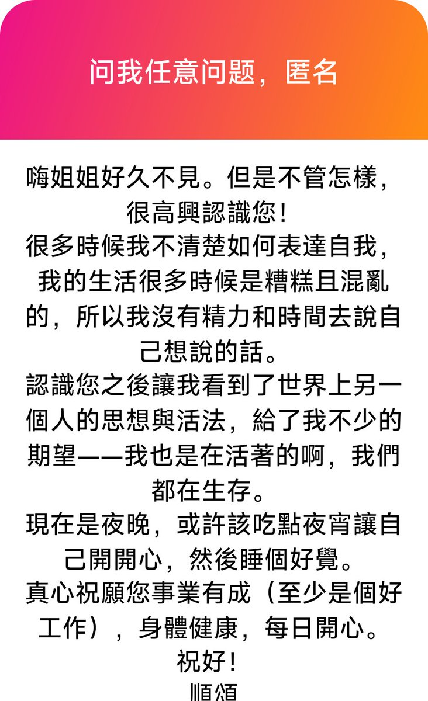

洛书瑶
@luoshuyao
十分感谢你的留言，很真诚的一段话，让我很感动。能给到你对生活的期望，这是我的荣幸。
其实很多时候我的感受也一样，不知道如何表达自我，生活也无聊透顶，每天都累到没有精力去思考和表达。但“我们都在生存”，我们都还活着，我们都为此努力奋斗。我觉得至少你这段话表达得很好，不需要刻意去想如何表达自我，哪怕只是一句简单的碎碎念，表达一下自己的心情，我都觉得珍贵。因为能写出这段话的你，也一定是一个敏感且善良的人。不只是我给了你一丝光亮，写出这段话的你也温暖了我。
也祝你身体健康，天天开心。
